CRIADOR DE CONTEÚDO
Guilherme Nishiyama
Conheça meu perfil
●
guinishiyama
Conteúdo real sobre corrida, evolução e performance. Histórias que aproximam marcas de quem vive o esporte.
© 2026 Guilherme Nishiyama
01
SOBRE MIM
Guilherme Nishiyama.
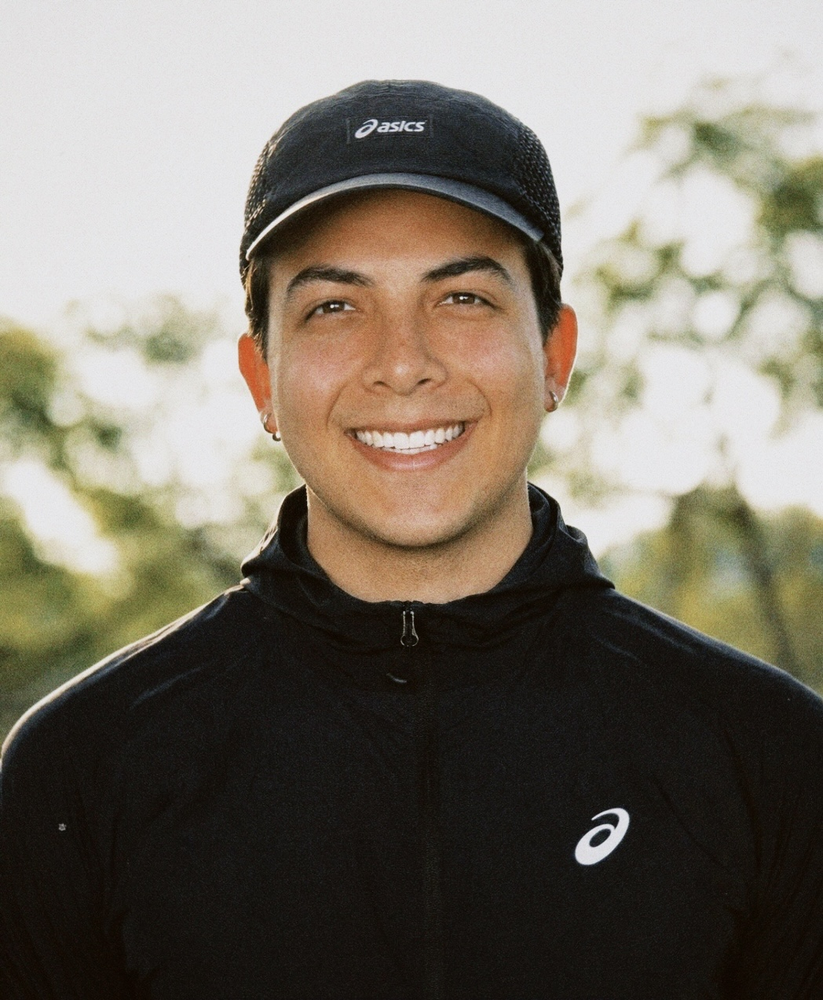
Atleta amador e criador de conteúdo, com o propósito de inspirar superação e qualidade de vida por meio do esporte.
Ex-atleta da Seleção Brasileira de beisebol, que precisou encerrar sua carreira após uma grave lesão no ombro. Hoje, encontrou na corrida uma nova paixão, buscando constantemente performance e superação de limites. Formado em Engenharia de Computação e profissional em inteligência de dados, ele equilibra uma rotina intensa de trabalho e estudos, inspirando outros a se reinventarem e perseguirem grandes objetivos.
Como embaixador da ASICS e membro ASICS FrontRunner, faz parte de uma comunidade global de corredores que inspiram pessoas a se movimentarem.
@guinishiyama ↗
02
PROJETOS E PARCERIAS
Trabalhos em destaque.
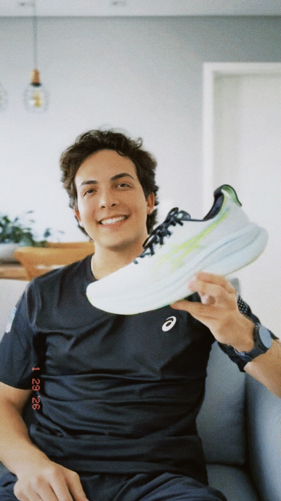
↗Reels em Collab com a ASICS
Review do tênis ASICS GEL-Nimbus 28
1,4 mi de visualizações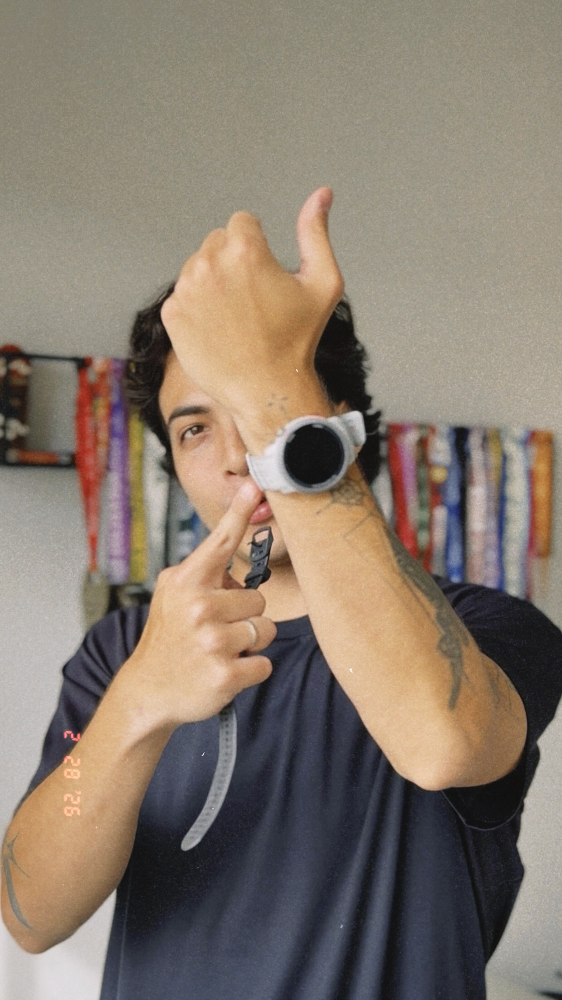
↗Reels em Collab com a COROS
Comparação entre COROS Pace Pro e COROS Pace 3
160 mil de visualizações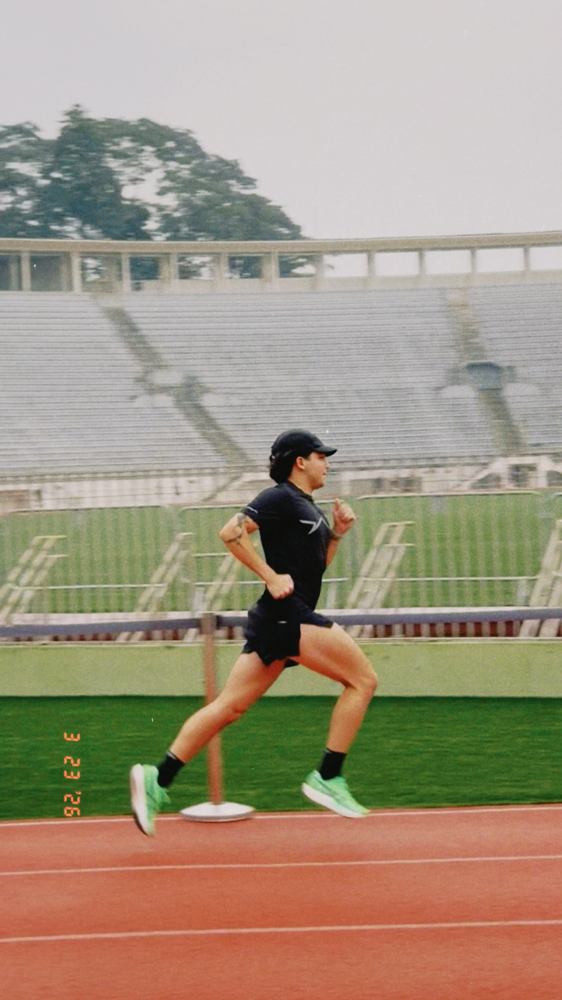
↗Reels em collab com a ASICS
Cuidados com o tênis no pós-treino
1,2 mi de visualizações ↗
↗
Reels em collab com a Pace It
Campanha do Endurance Challenge Pace It 2.0
4,3 mil visualizações
03
MEUS NÚMEROS
Números de engajamento.
Visualizações
3,2 mi Últimos 90 diasContas alcançadas
1,3 mi Últimos 90 diasInterações
150 mil Últimos 90 diasSeguidores
9,4 mil InstagramDados com base no painel profissional de insights do Instagram.
04
MINHA AUDIÊNCIA
Números de comunidade.
Gênero
Masculino
59,8%
Feminino
40,2%
Faixa etária
18–24 anos
12,8%
25–34 anos
43,0%
35–44 anos
26%
45–54 anos
14,4%
Principais localizações
- 01 Brasil
- 02 Vietnã
- 03 Itália
- 04 Estados Unidos
- 05 Índia
05
CONTEÚDOS
Formatos de conteúdo.
Reels
Conteúdos dinâmicos, educativos, inspiracionais e integrados à rotina de treinos.
Stories
Apresentação espontânea de produtos, experiências, eventos e bastidores.
UGC
Vídeos produzidos para os canais da marca, com linguagem natural e foco no produto.
Reviews
Testes de produtos em situações reais de treino, com opinião e experiência de uso.
Eventos
Cobertura de provas, lançamentos, ativações, viagens e experiências esportivas.
Campanhas
Projetos personalizados alinhados ao objetivo, posicionamento e público da marca.
06
PARCERIAS
Marcas que já fazem parte da jornada.
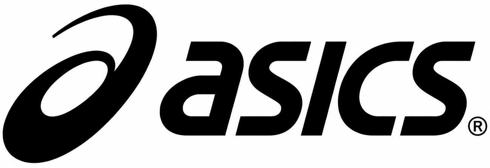
Parceiros há 1 ano e 6 meses.
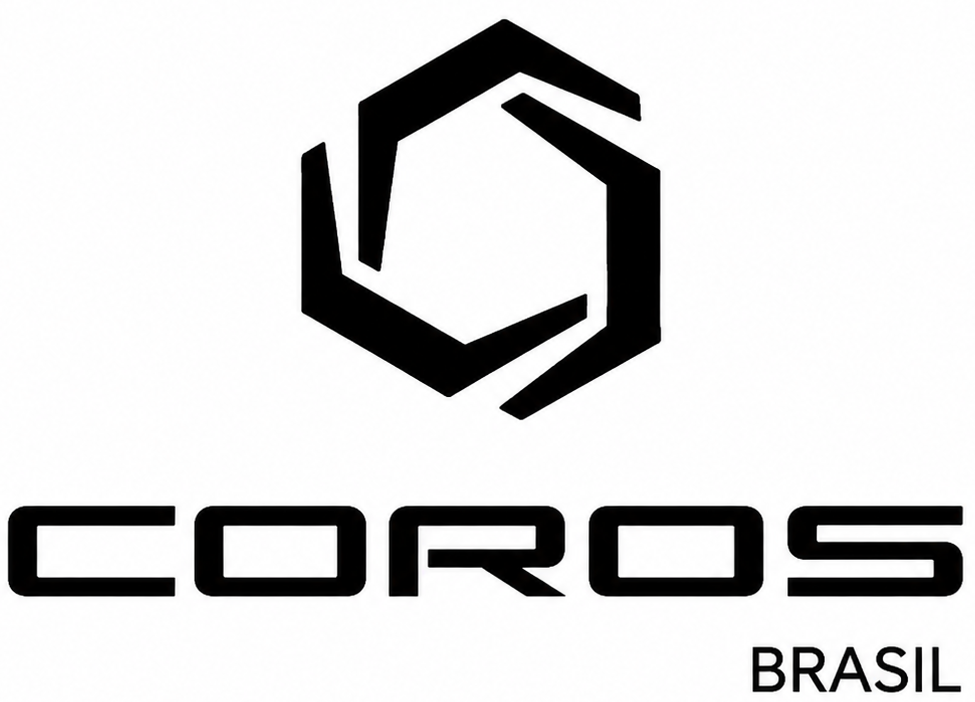
Parceiros há 2 anos.
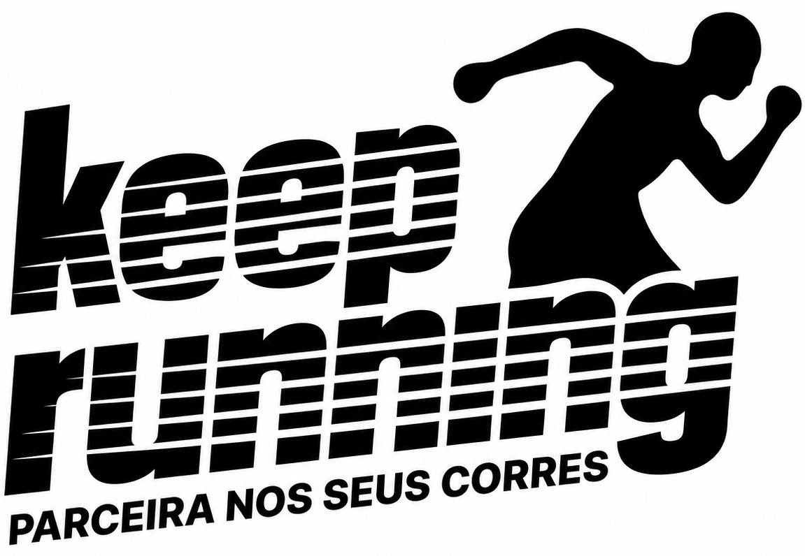
Parceiros há 6 meses.
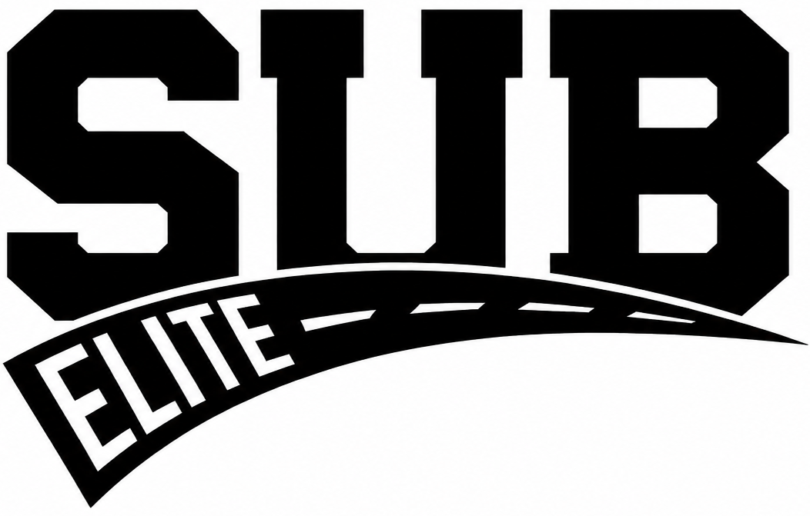
Parceiros há 3 meses.
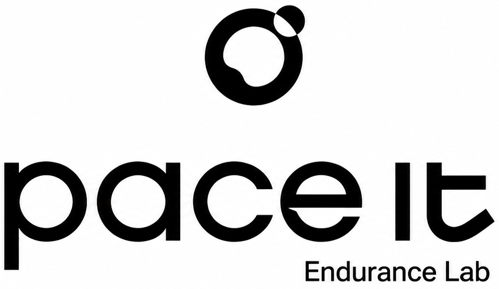
Parceiros há 6 meses.
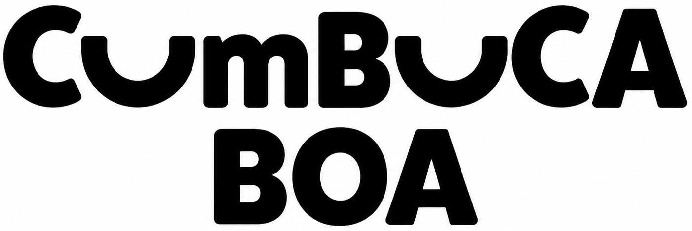
Parceiros há 1 ano e 6 meses.
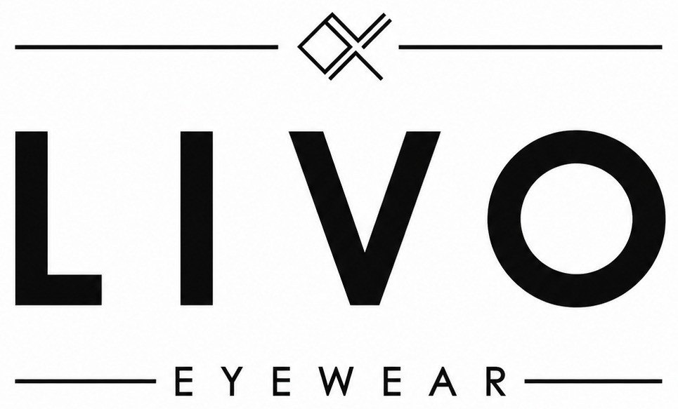
Parceiros há 4 meses.
Contato
Vamos criar juntos?
Entre em contato para campanhas, eventos, experiências, UGC e projetos personalizados.